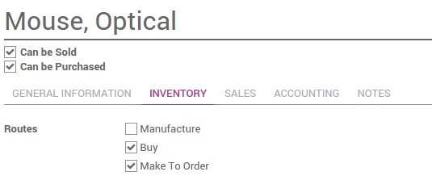

Overview
A route is a collection of procurement rules and push rules. Odoo can manage advanced push/pull routes configuration, for example:
- Manage product manufacturing chains
- Manage default locations per product
- Define routes within your warehouse according to business needs, such as quality control, after sales services or supplier returns
- Help rental management, by generating automated return moves for rented products
Configuration
Procurement rules are part of the routes. Go to the Inventory application, and tick Advance routing of products using rules.

Pre-configured routes
Odoo has some pre-configured routes for your warehouses.
In the Inventory application, go to .
In the Warehouse Configuration tab, Incoming Shipments and Outgoing Shippings options set some routes according to your choices.

Custom Routes
In the Inventory application, go to .

First, you have to select the places where this route can be selected. You can combine several choices.
Routes applied on warehouses
If you tick Warehouses, you have to choose on which warehouse it will be applied. The route will be set for all transfer in that warehouse that would meet the conditions of the procurement and push rules.

Routes applied on products
If you tick Products, you have to manually set on which product it will be applied.
Open the product on which you want to apply the routes (). In the Inventory Tab, select the route(s):
Routes applied on Product Category
If you tick Product Categories, you have to manually set on which categories it will be applied.

Open the product on which you want to apply the routes (). Select the route(s) under the Logistics section :

Routes applied on Sales Order lines
If you tick Sales order lines, you have to manually set the route every time you make a sale order.

In order to make it work, you also have to activate the use of the routes on the sales order.
In the Sales application, go to and tick Choose specific routes on sales order lines (advanced).
You can now choose the routes for each lines of your sales orders:

Procurement and push rules
Please refer to the documents:
Procurement configuration
When doing a procurement request, you can force the route you want to use. On the product (), click on Procurement Request. Choose the route you want to use next to Preferred Routes:

Make-to-Order Route
If you work with no stock, or with minimum stock rules, it is better to use the Make To Order route. Combine it with the route Buy or Manufacture and it will trigger automatically the purchase order or the Manufacturing Order when your products are out-of-stock.